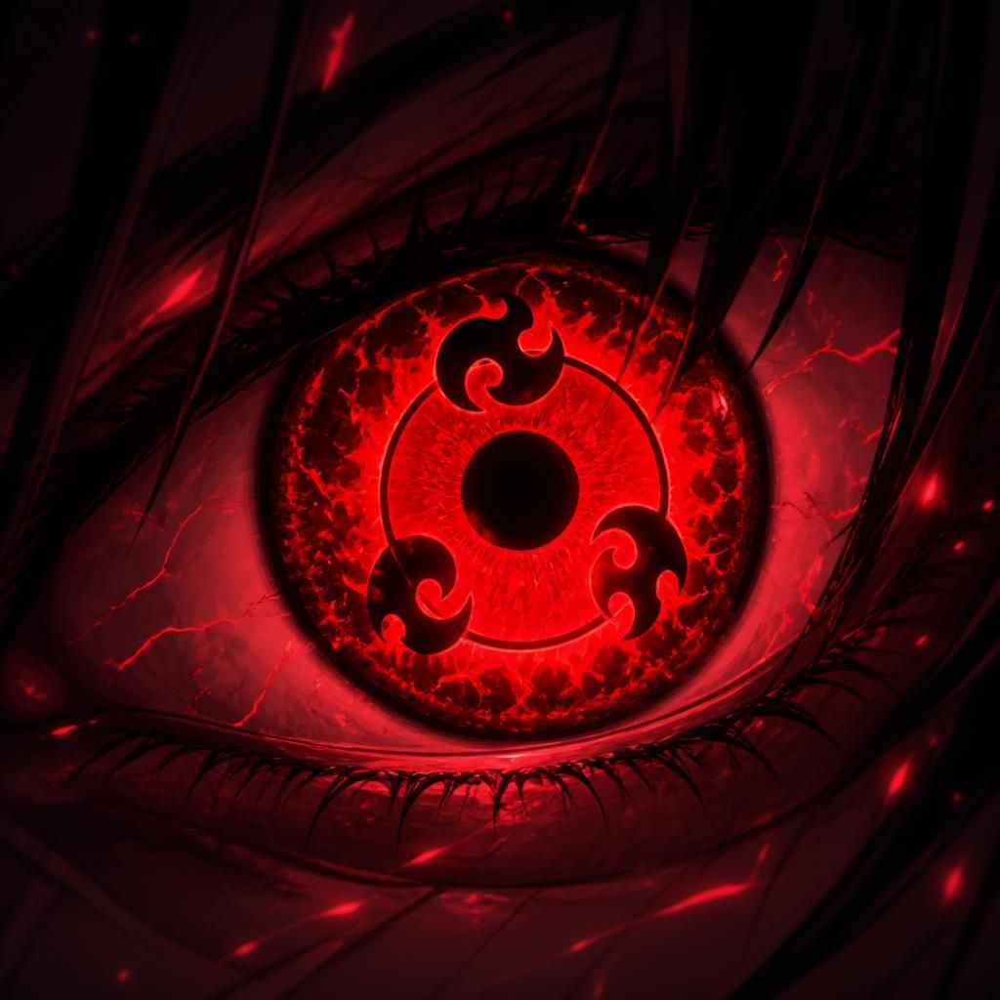
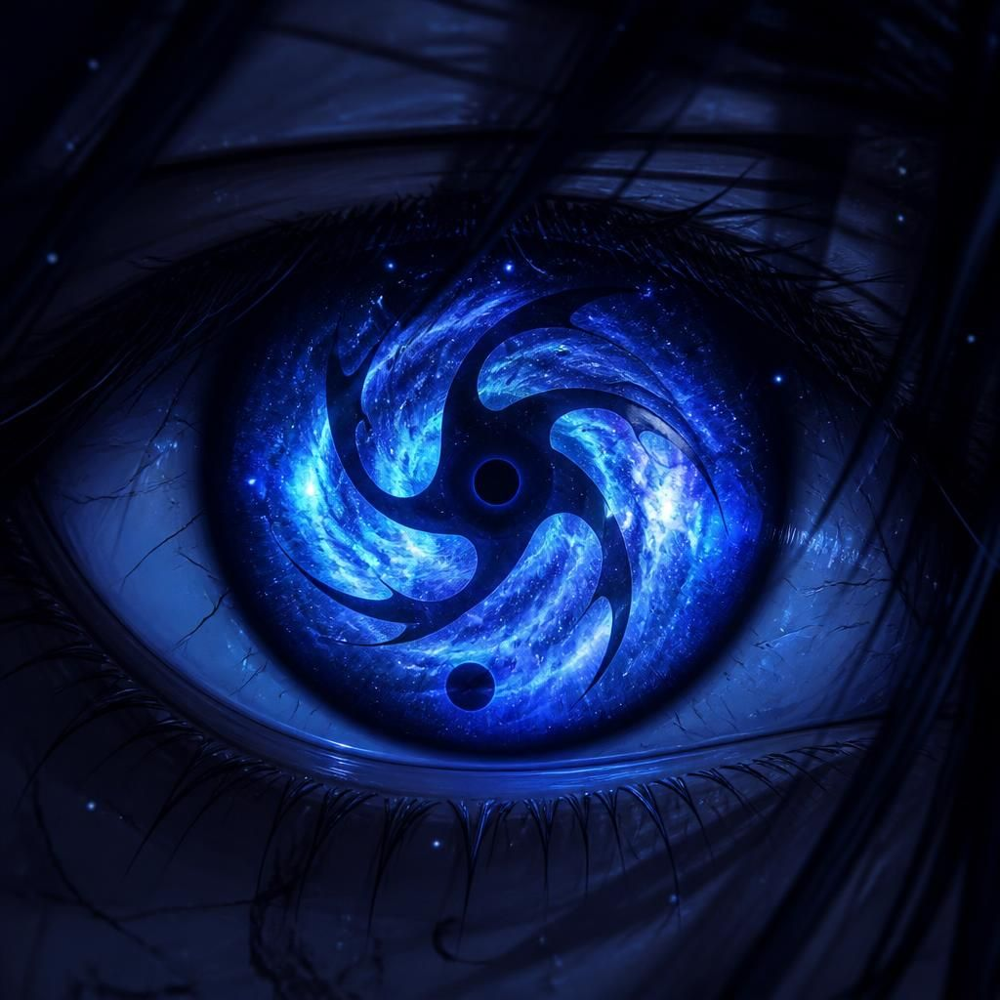

Kuroshin
Mangekyō Primordial + Mangekyō Sharingan de 5 Tomoes + Rinnegan de 5 Tomoes (Ômega). A camada Mangekyō existe, mas o foco visual atual do site é a forma Ômega.
Aiko
Mangekyō do Tempo + Mangekyō Sharingan de 5 Tomoes + Rinnegan de 5 Tomoes (herdeira). A assinatura ocular dela é temporal, só ainda sem card individual na galeria.
Akari
Tenseigan + Mangekyō Sharingan de 5 Tomoes + Rinnegan de 5 Tomoes (herdeira). Dōjutsu triplo: a base Hyūga-Uchiha ganha a mesma camada Sharingan+Rinnegan dos outros herdeiros.
Kael & Mizuki
Kael possui Mangekyō do Veneno + Mangekyō Sharingan de 5 Tomoes + Rinnegan de 5 Tomoes (herdeiro). Mizuki possui Mangekyō do Destino + Mangekyō Sharingan de 5 Tomoes + Rinnegan de 5 Tomoes (herdeira). Ambos estão corretos na lore, faltando apenas arte ocular dedicada.
| Função | Efeito na Lore | Com Mangekyō Sharingan e Rinnegan |
|---|---|---|
| Genjutsu Ocular Supremo | Prende percepção, intenção e tomada de decisão. | Afeta alvos com proteção mental e dōjutsu inferior. |
| Kotoamatsukami | Altera uma decisão sem o alvo perceber a interferência. | Ganha alcance, precisão e resistência contra quebra. |
| Amaterasu / Variações | Chamas especiais adaptadas à natureza de cada usuário. | Podem receber forma, alvo e função por leitura dos 20 tomoes. |
| Kagutsuchi / Moldagem | Modela fogo, gelo, sombra ou chakra ocular em armas. | Vira construção dimensional ou técnica de área. |
| Susanoo Perfeito | Avatar ocular máximo do Mangekyō. | Recebe chakra da bijū, 20 tomoes e forma final personalizada. |
| Izanagi / Izanami Primordial | Reescreve resultado ou prende ciclos de decisão. | Não causa cegueira por causa da camada primordial do olho. |
| Leitura de Intenção | Prevê ataque pela intenção antes do movimento. | Sincroniza com os outros três em tempo real. |
| Selo Ocular | Marca alvo, técnica ou dimensão com uma ordem visual. | Permite combos entre os quatro e técnicas conjuntas. |
1. Tsukikage · 月影
Tipo: Espaço-tempo. O usuário funde seu corpo com qualquer sombra dentro do alcance da visão.
Aplicações: teleportar-se entre sombras, esconder completamente a presença, atacar surgindo da sombra do inimigo, desviar de ataques entrando em uma sombra, espionar locais através de sombras conectadas.
Evolução: no EMS, pode transportar aliados junto.
2. Enma no Kagami · 閻魔の鏡
Tipo: Defesa/Contra-ataque. O Mangekyō cria um espelho etéreo diante do usuário, capaz de refletir ninjutsu elemental, Bijūdama, projéteis de chakra, genjutsu visual e selamentos simples.
Reflexão: o ataque retorna mais rápido, mais concentrado e até 120% mais forte.
Evolução: o reflexo pode ser redirecionado para qualquer alvo visível.
3. Raijin no Me · 雷神の目
Tipo: Espaço-tempo. Marca qualquer ponto observado.
Aplicações: teleporte instantâneo, esquiva absoluta, ataques surpresa, mudança de posição durante golpes, combos impossíveis de prever.
Evolução: pode marcar dezenas de pontos simultaneamente.
4. Kuroboshi · 黒星
Cria pequenas estrelas negras de chakra denso. Cada estrela orbita automaticamente, bloqueia projéteis, drena chakra por contato e pode explodir.
Evolução: as estrelas podem fundir-se formando uma esfera gravitacional.
5. Shinsei · 新生
Reverte apenas o corpo do usuário, recuperando ossos quebrados, músculos, sangue perdido e ferimentos internos — não recupera morte cerebral nem membros completamente destruídos.
Evolução: pode voltar até 30 segundos.
6. Jigoku no Kusari · 地獄の鎖
Correntes negras surgem diretamente da pupila, capazes de prender chakra, prender membros, bloquear selos de mão, imobilizar invocações e selar bijū por alguns segundos.
Evolução: podem prender até Susanoo.
7. Kōri no Yume · 氷の夢
Genjutsu temporal: para a vítima, 1 segundo pode parecer dias, meses ou até anos. O usuário pode criar torturas mentais, treinamentos ilusórios, interrogatórios e falsas batalhas dentro dele.
Evolução: pode prender várias pessoas.
8. Akuma no Kiba · 悪魔の牙
Todo golpe cria uma marca invisível que registra dano, chakra e posição. Quando ativadas, todas explodem simultaneamente.
Evolução: as marcas podem ser detonadas individualmente.
9. Shinkirō · 蜃気楼
Cria clones ilusórios parcialmente físicos, capazes de atacar, defender, utilizar armas e enganar sensores.
Evolução: até 20 miragens.
10. Meifu · 冥府
Abre pequenas fendas dimensionais capazes de absorver kunais, flechas, Rasengan, Chidori, Katon e Amaterasu, liberando tudo novamente depois.
Evolução: pode prender pessoas.
11. Hoshikuzu · 星屑
Milhares de partículas microscópicas que cortam chakra, cortam carne e atravessam armaduras.
Evolução: podem perseguir o alvo automaticamente.
12. Tensei no Me · 転生の目
Manipula posições internas — coração, pulmões, braços, pernas e fluxo de chakra — sem causar dano direto. O inimigo perde completamente a coordenação.
Evolução: pode afetar vários órgãos ao mesmo tempo.
13. Gekkō · 月光
Quanto menos luz, maior a velocidade, os reflexos, a percepção e a precisão do usuário. À noite, ele praticamente entra em estado de hiperfoco.
Evolução: pode ocultar completamente sua presença.
14. Yomigaeri · 蘇り
Caso morra, o Mangekyō reescreve os últimos 30 segundos: o usuário retorna vivo, com chakra parcial, lembrando exatamente como morreu.
15. Kuro Ame · 黒雨
Nuvens negras liberam gotas de Amaterasu que queimam continuamente, permanecem no chão e impedem movimentação.
Evolução: transforma toda uma floresta em um campo de chamas negras.
16. Seizon · 生存
O Sharingan controla o corpo automaticamente, desviando espadas, flechas, socos e ninjutsu mesmo sem o usuário reagir conscientemente.
Evolução: pode durar até 15 segundos.
17. Shūen · 終焉
Qualquer ferimento causado torna-se "amaldiçoado": o alvo não regenera, perde chakra continuamente e sente dor constante.
Evolução: pode impedir até regenerações extremamente avançadas por um curto período.
18. Mugen no Ito · 無限の糸
O usuário enxerga conexões invisíveis de chakra, podendo cortar invocações, marionetes, genjutsus, receptores negros, técnicas de controle mental e vínculos de chakra entre jinchūriki e invocações temporárias.
Evolução: também pode reconectar fios, assumindo o controle de técnicas interrompidas ou redirecionando fluxos de chakra para criar armadilhas estratégicas.
19. Tengai · 天界
Cria um domínio ocular com cerca de 50 metros de raio. Dentro dele, os movimentos dos inimigos ficam aproximadamente 30% mais lentos, a percepção do usuário aumenta, o chakra dos adversários sofre uma leve resistência ao fluir e projéteis parecem "pesados", reduzindo sua velocidade.
Aplicações: facilita contra-ataques, prejudica investidas em grupo, aumenta a eficiência de genjutsus e técnicas de precisão.
Evolução: no auge, o domínio pode ser ajustado para afetar apenas inimigos escolhidos, preservando aliados.
20. Kage Bunshin no Me · 影分身の目
Tipo: Espaço-tempo/duplicação. Projeta uma cópia visual do usuário a curta distância que confunde o alvo por uma fração de segundo antes de qualquer movimento real.
Evolução: pode projetar até 3 imagens simultâneas.
21. Kuro Tsurugi · 黒剣
Manifesta uma lâmina de chakra negro condensado que corta através de defesas elementais.
Evolução: pode dividir-se em duas lâminas gêmeas.
22. Rakuen no Toge · 楽園の棘
Tipo: Genjutsu de armadilha. Cria uma ilusão de "vitória" ou "segurança" que faz o alvo baixar a guarda por um instante crítico.
Evolução: pode afetar vários alvos ao mesmo tempo.
23. Kyomu no Kabe · 虚無の壁
Cria uma parede invisível de chakra que absorve o impacto de um único golpe, por mais forte que seja.
Evolução: pode ser posicionada a distância, protegendo aliados.
24. Chi no Ame · 血の雨
Controla à distância pequenas gotas do próprio sangue do usuário como agulhas cortantes guiadas visualmente.
Evolução: pode reabsorver o sangue para regeneração parcial.
25. Yoru no Me · 夜の目
Percepção total no escuro: enxerga assinaturas de chakra através de paredes e obstáculos sólidos.
Evolução: alcance aumenta com o nível do Mangekyō.
26. Hametsu no Kioku · 破滅の記憶
Tipo: Genjutsu. Força o alvo a reviver o pior momento da própria vida, paralisando-o emocionalmente.
Evolução: o efeito pode ser prolongado.
27. Tessen no Kaze · 鉄扇の風
Lâminas de vento cortante moldadas pelo olhar, capazes de fatiar em múltiplas direções simultaneamente.
Evolução: pode formar um redemoinho defensivo.
28. Shi no Senkoku · 死の宣告
Marca visual que "sentencia" um ponto do corpo do alvo — no momento certo, aquele ponto sofre uma falha crítica de coordenação.
Evolução: pode marcar múltiplos pontos simultaneamente.
29. Yūrei Ashi · 幽霊足
Permite mover-se sem deixar rastro de chakra detectável por sensores.
Evolução: pode se tornar completamente intangível por alguns segundos.
30. Kagami Jigoku · 鏡地獄
Cria múltiplos reflexos ilusórios do próprio usuário que atacam em sincronia real, não apenas visual.
Evolução: os reflexos podem coordenar um golpe final simultâneo.
31. Ten no Kusabi · 天の楔
Trava temporariamente uma técnica em execução do inimigo, como uma pausa instantânea no jutsu alheio.
Evolução: pode travar duas técnicas ao mesmo tempo.
32. Kuroi Namida · 黒い涙
Lágrimas de chakra negro corrosivo que danificam qualquer superfície ao contato, incluindo armaduras de chakra.
Evolução: pode ser lançada como projétil.
33. Rasen no Manako · 螺旋の眼
Cria um pequeno vórtice visual que distorce a trajetória de ataques à distância, desviando-os do alvo.
Evolução: o vórtice pode redirecionar o ataque para outro alvo.
34. Kodoku no Ori · 孤独の檻
Prisão dimensional temporária que isola o alvo em um espaço vazio e silencioso, cortando comunicação com aliados.
Evolução: o usuário pode entrar junto para atacar sem interferência externa.
35. Chikyū Wareme · 地球割れ目
Rachaduras de chakra negro se espalham pelo chão a partir do olhar, explodindo em pilares de energia.
Evolução: pode direcionar múltiplas rachaduras simultâneas.
36. Bakuha no Hitomi · 爆破の瞳
Marca qualquer objeto ou ponto observado para detonação retardada de chakra puro.
Evolução: pode marcar até 5 pontos, cada um com força plena.
37. Yami no Ude · 闇の腕
Projeta braços espectrais de chakra escuro que seguram, imobilizam ou arremessam o alvo à distância.
Evolução: os braços podem carregar armas.
38. Owari no Kane · 終わりの鐘
Um som visual, sincronizado ao olhar, gera uma vibração capaz de quebrar concentração de genjutsu e técnicas de controle mental em aliados próximos.
Evolução: pode romper até genjutsus de dōjutsu superior.
39. Saigo no Ippo · 最後の一歩
Concede um único movimento de velocidade e precisão sobre-humanas — o "último passo perfeito".
Evolução: pode ser ativado conscientemente a qualquer momento da batalha.